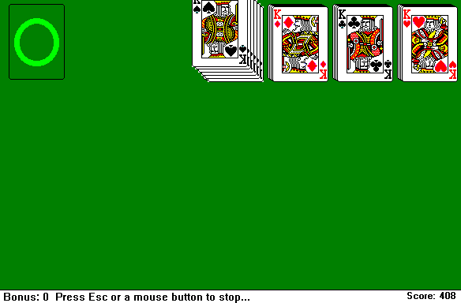
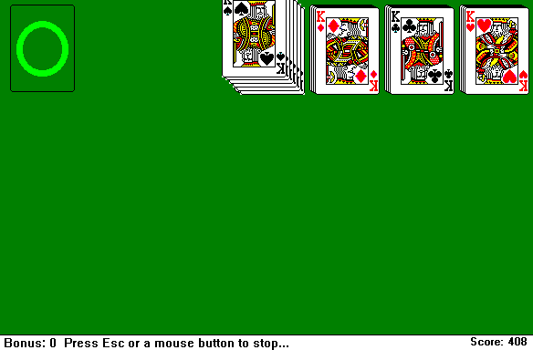

You can:
- View my projects
- Read my blog
- Contact me
- Play Womburger 2
- Other stuff probably
About Me
Hi! I'm glad you decided to check out my website :)
My name is Joseph (online as jofish) and I'm an ameteur developer, lover of old technology, retro games, Computer Engineering major, and INSTAGRAM REELS
I've loved computers for literally my entire life, and have been dabbling in programming of some kind since elementary school, albeit it was mostly scratch. Realistically, though, I have been programming for about 3 years and am mainly proficient in Java; however, I also have some experience in C#. I know about enough HTML/CSS to develop this page but am certainly no web developer. I'm certified in Unity but have switched to Godot and am currently learning it.
During my high school years, I worked as an IT intern so I have some experience in laptop repair/general tech support, but I wouldn't call myself an expert my any means.
Speaking of which, I've been collecting videos games since about when I was born as well! It started with V-Smile and later into old Nintendo and Playstation. Now I do a bit of everything. I think in middle school is when I turned this hobby into a business where I buy and resell games, I sell at conventions, sidewalk sales, my garage sales, and ebay. I have so. many. games.